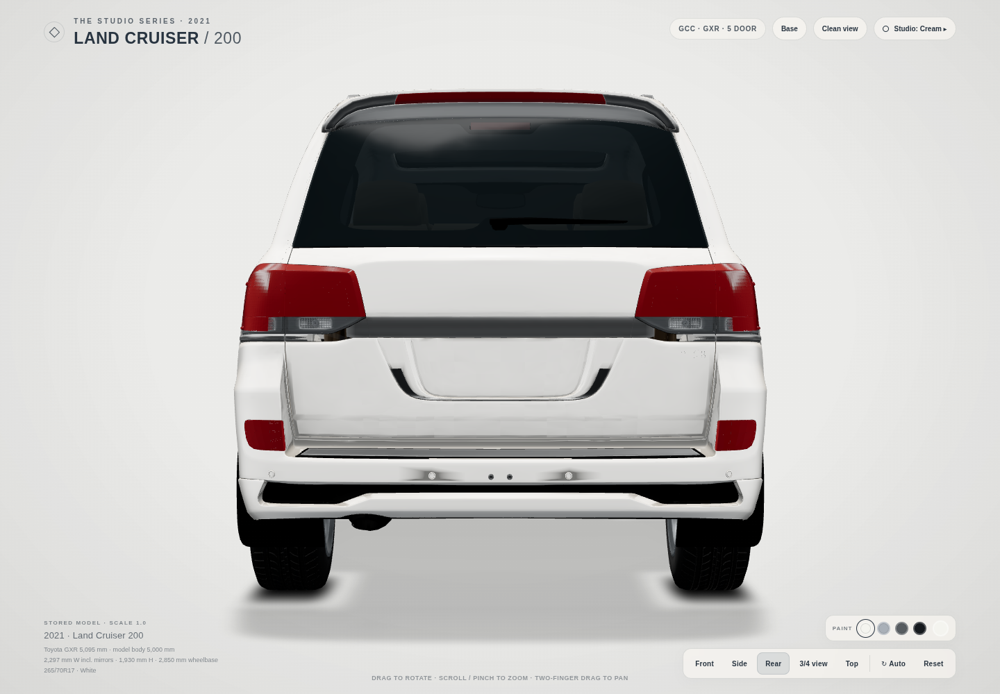
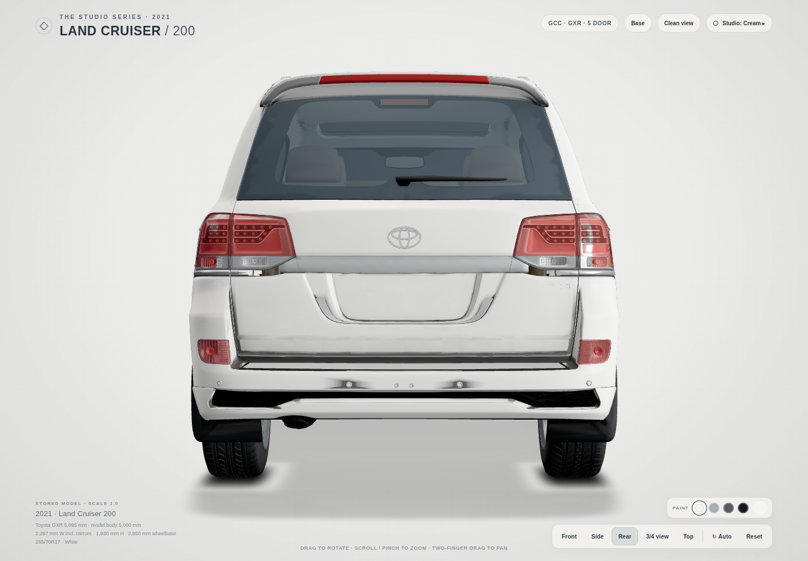
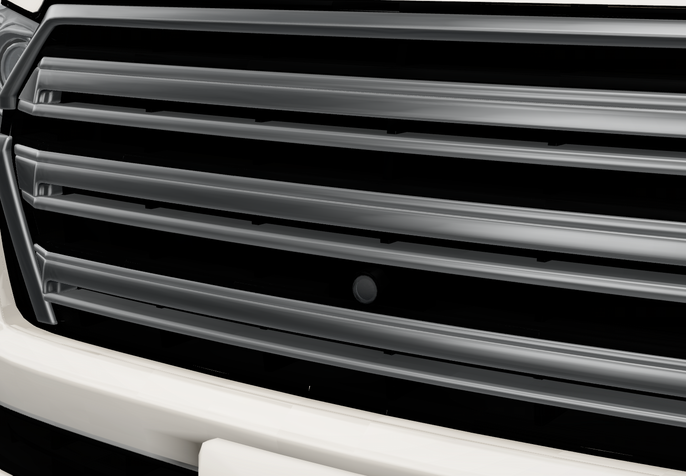
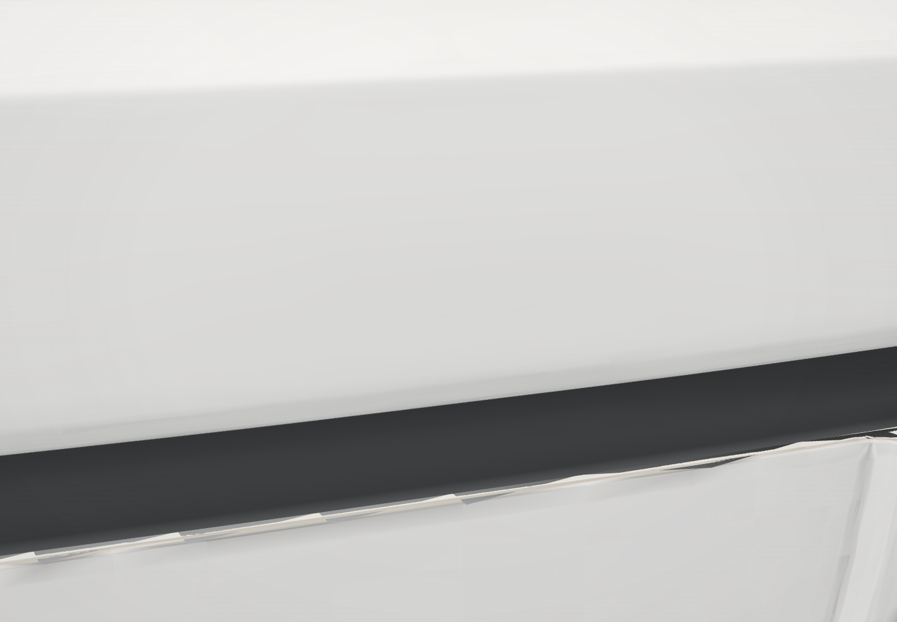
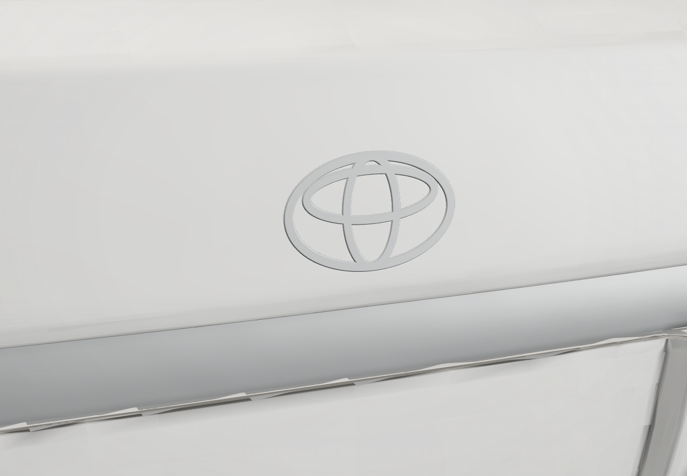
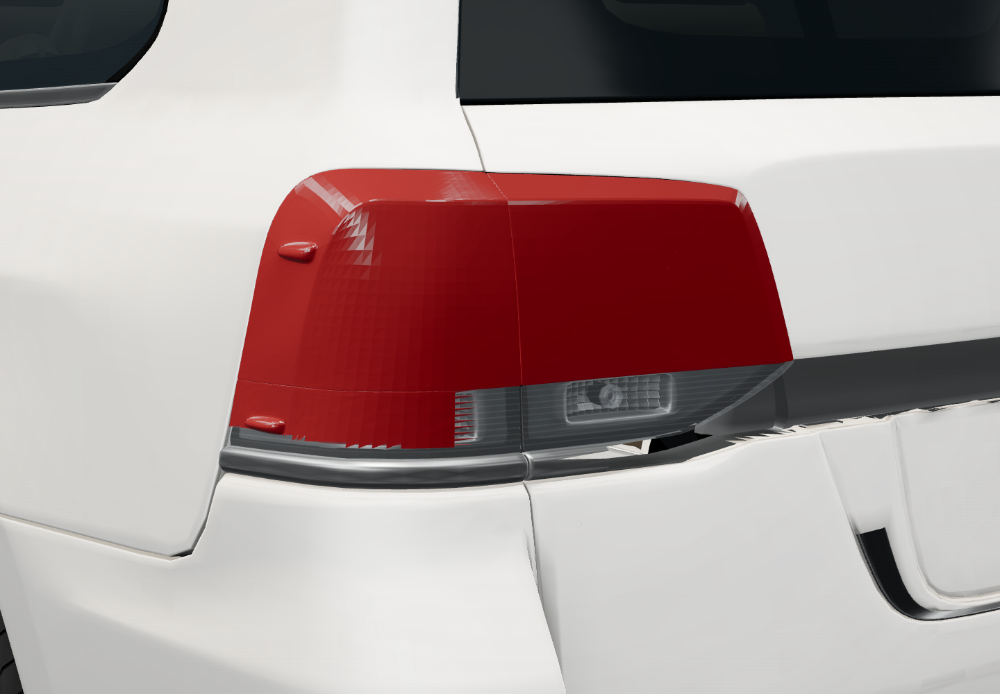
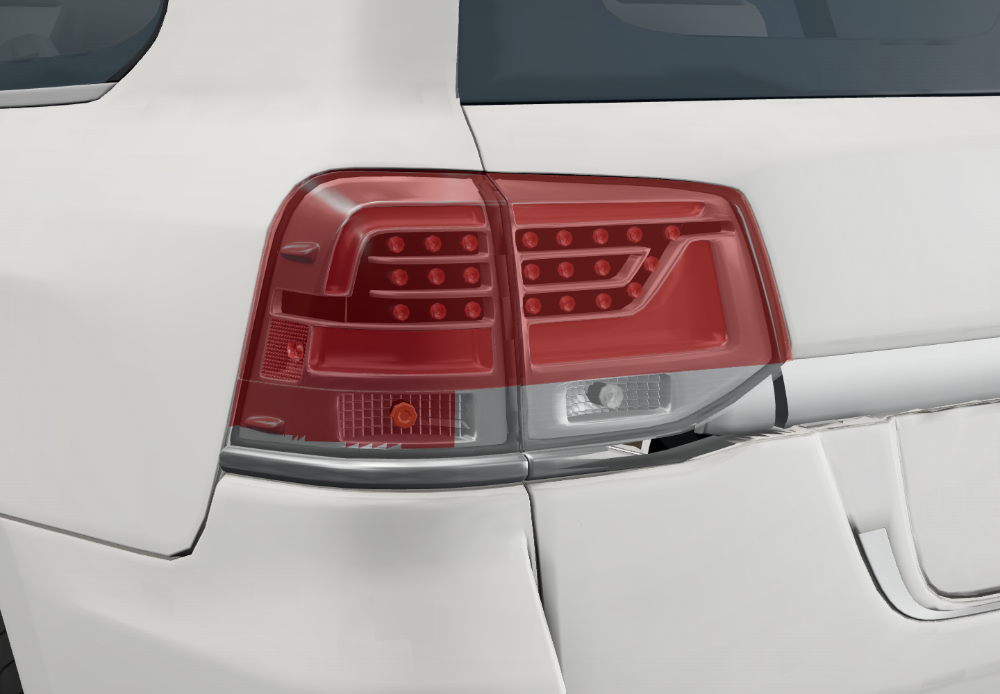

Reference matching pending: the owner’s photos were unavailable. Badge fit/size and lamp-pattern agreement are provisional. No grade/word badges have been assumed.
Pixel measurements · Every changed value and source line · Every new file · Visual checks







| Name | Old | New | File:line |
|---|---|---|---|
| Paint roughness | 0.38 | 0.42 | index.html:262 |
| Paint clearcoat | 0.55 | 0.35 | index.html:262 |
| Paint clearcoat roughness | 0.2 | 0.3 | index.html:262 |
| Paint environment intensity | 0.9 | 0.7 | index.html:262 |
| Chrome roughness | 0.24 | 0.52 | index.html:263 |
| Chrome metalness | 1 | 0.45 | index.html:263 |
| Chrome environment intensity | 0.95 | 0.85 | index.html:263 |
| Chrome clearcoat | 0.15 | 0.08 | index.html:270 |
| Chrome clearcoat roughness | 0.23 | 0.3 | index.html:270 |
| Glass colour | "#20282c" | "#46545f" | index.html:264 |
| Glass roughness | 0.13 | 0.28 | index.html:264 |
| Glass opacity | 0.88 | 0.8 | index.html:264 |
| Glass environment intensity | 1.05 | 0.4 | index.html:264 |
| Glass clearcoat | 0.2 | 0.1 | index.html:273 |
| Glass specular intensity | 0.25 | 0.45 | index.html:274 |
| Glass clearcoat roughness | 0.045 | 0.22 | index.html:275 |
| Cream black trim colour | "#050607" | "#282a2c" | index.html:265 |
| Slate black trim colour | "#0d1115" | "#282a2c" | index.html:265 |
| Cream black trim roughness | 0.72 | 0.65 | index.html:265 |
| Slate black trim roughness | 0.56 | 0.65 | index.html:265 |
| Cream black trim environment intensity | 0.2 | 0.3 | index.html:265 |
| Slate black trim environment intensity | 1 | 0.3 | index.html:265 |
| Slate black trim specular multiplier | 1 | 0.25 | index.html:265 |
| Paint direct diffuse gain | 9 | 2.2 | index.html:296 |
| Paint indirect fill gain | 2.5 | 3.4 | index.html:296 |
| Rear-facing indirect multiplier | 3.8 | 0.5 | index.html:297 |
| Paint baked AO strength | 1.12 | 1.2 | index.html:297 |
| Paint concave curvature strength | 1.35 | 1.65 | index.html:297 |
| Paint cavity floor | 0.1 | 0.06 | index.html:333 |
| Paint diffuse cavity weight | 0.9 | 1.0 | index.html:353 |
| Paint indirect specular cavity weight | 0.85 | 1.0 | index.html:355 |
| Paint direct specular cavity weight | 0.5 | 1.0 | index.html:355 |
| Paint indirect clearcoat cavity weight | 0.85 | 1.0 | index.html:358 |
| Paint direct clearcoat cavity weight | 0 | 1.0 | index.html:359 |
| Occluded ridge lift multiplier | 1 | "bakedCavity \u00d7 bakedAO\u00b3" | index.html:361 |
| Concave seam attenuation strength | 0 | 0.7 | index.html:266 |
| Concave seam curvature gate | null | [0.04, 0.18] | index.html:266 |
| Concave seam occlusion gate | null | [0.12, 0.5] | index.html:266 |
| Bonnet reflection emitter size | [6, 0.9] | [1.4, 0.6] | index.html:240 |
| Bonnet reflection emitter position | [0.8, 2.8, -5] | [3.7, 1.9, -5] | index.html:240 |
| Bonnet reflection emitter radiance | 2.8 | 215 | index.html:240 |
| Side reflection emitter radiance | 6.5 | 2.5 | index.html:242 |
| Roof reflection emitter size | [7, 0.55] | [1.8, 0.6] | index.html:243 |
| Roof reflection emitter position | [0.5, 2.4, -6] | [5, 0.9, -5] | index.html:243 |
| Roof reflection emitter radiance | 4 | 200 | index.html:243 |
| Rear red lens colour | "#ab0616" | "#9e0818" | index.html:655 |
| Rear red lens clearcoat roughness | 0.05 | 0.06 | index.html:656 |
| Rear red lens environment intensity | 1 | 1.1 | index.html:656 |
| Rear red lens emissive colour | "#6a0410" | "#430007" | index.html:657 |
| Rear red lens emissive intensity | 0.12 | 0.035 | index.html:657 |
| Rear red lens transparent | false | true | index.html:658 |
| Rear red lens opacity | 1 | 0.55 | index.html:658 |
| Rear red lens depth write | true | false | index.html:658 |
| Rear red lens side | "DoubleSide" | "FrontSide" | index.html:659 |
| Rear lenses flat shading | true | false | index.html:659 |
| Rear lenses force single pass | false | true | index.html:659 |
| Rear clear lens colour | "#dce8f2" | "#f2f5f4" | index.html:662 |
| Rear clear lens roughness | 0.055 | 0.1 | index.html:662 |
| Rear clear lens clearcoat | 0.9 | 0.75 | index.html:662 |
| Rear clear lens clearcoat roughness | 0.23 | 0.08 | index.html:663 |
| Rear clear lens environment intensity | 1 | 1.1 | index.html:663 |
| Rear clear lens opacity | 0.16 | 0.35 | index.html:664 |
| Rear clear lens emissive colour | "#bfd4ef" | "#bfc6c4" | index.html:664 |
| Rear clear lens emissive intensity | 0.025 | 0.12 | index.html:664 |
| Rear reflector chrome roughness | 0.24 | 0.22 | index.html:668 |
| Rear reflector chrome metalness | 1 | 0.95 | index.html:668 |
| Rear reflector chrome environment intensity | 0.95 | 1.1 | index.html:669 |
| Rear reflector chrome clearcoat roughness | 0.23 | 0.3 | index.html:270 |
| Tailgate garnish roughness | 0.24 | 0.45 | index.html:672 |
| Tailgate garnish metalness | 1 | 0.45 | index.html:672 |
| Tailgate garnish environment intensity | 0.95 | 0.85 | index.html:672 |
| Slate paint variant | "original studio paint" | "same satin paint variant as Cream" | index.html:583 |
| Clay paint variant | "matte warm-white height-shaded clay" | "common satin painted metal" | index.html:583 |
| Clay white display colour | "#efe6da" | "#f4f4ef" | index.html:537 |
| Clay paint roughness | 0.85 | 0.42 | index.html:262 |
| Clay paint clearcoat | 0 | 0.35 | index.html:262 |
| Clay paint clearcoat roughness | 1 | 0.3 | index.html:262 |
| Clay paint specular intensity | 0.1 | 1 | index.html:268 |
| Clay paint environment intensity | 0.035 | 0.7 | index.html:262 |
| Clay glass variant | "unlit plum gradient" | "physical blue-grey tinted glass" | index.html:597 |
| Clay exterior chrome variant | "matte pink-grey" | "common satin metal" | index.html:597 |
| Clay exterior black variant | "matte plum-grey" | "common neutral dark grey" | index.html:597 |
| Clay rear lamp variant | "matte dusty red" | "common optical lens/reflector materials" | index.html:597 |
| Clay exposure | 2.4 | 1.2 | index.html:968 |
| Clay environment intensity | 0.1 | 0.65 | index.html:968 |
| Clay key colour | "#ffe0b0" | "#fffbf5" | index.html:968 |
| Clay key intensity | 5.8 | 1.65 | index.html:968 |
| Clay key position | [-3.8, 10, 1.2] | [-1.5, 8, 2] | index.html:968 |
| Clay fill sky | "#fff0df" | "#f7f5f0" | index.html:968 |
| Clay fill ground | "#c2a688" | "#52565c" | index.html:968 |
| Clay fill intensity | 0.45 | 0.6 | index.html:968 |
| Sharp occluded-convex gap strength | 0 | 0.45 | index.html:266 |
| Sharp gap ridge gate | null | [0.5, 0.75] | index.html:337 |
| Sharp gap occlusion gate | null | [0.02, 0.2] | index.html:337 |
| Slate paint direct diffuse gain | 1 | 2.2 | index.html:296 |
| Slate paint indirect diffuse gain | 1 | 3.4 | index.html:296 |
| Clay painted-surface AO/ridge/valley | [0.65, 0.52, 0.72] | [1.2, 1.0, 1.65] | index.html:297 |
| Clay painted-surface height modulation | {"lowerKey": 0.09, "start": 0.65, "end": 1.14} | "not applied to common satin paint" | index.html:583 |
| Bonnet missing-shutline boundary strength | 0 | 0.98 | index.html:508 |
| Bonnet boundary radius (metres) | null | 0.006 | index.html:508 |
| Bonnet boundary profile samples | null | 24 | index.html:494 |
| Bonnet boundary derivation | null | "read-only stored triangle cross-sections; colour varying only" | index.html:487 |
| Paint shader program | "lc200-cream-paint-lighting-v4" | "lc200-base-paint-lighting-v9" | index.html:383 |
| Baked shader program | "lc200-baked-ao-curvature-v1" | "lc200-baked-ao-curvature-v4 + zone suffix" | index.html:365 |
| Cream detail shader program | "lc200-cream-baked-detail-v1" | "lc200-cream-baked-detail-v4 + zone suffix" | index.html:365 |
| Default left lamp part | "lamp_rear_L" | "lamp_rear_L_finish" | build.json:14 |
| Default right lamp part | "lamp_rear_R" | "lamp_rear_R_finish" | build.json:15 |
| Front emblem slot | null | "emblem_front" | build.json:39 |
| Rear emblem slot | null | "emblem_rear" | build.json:40 |